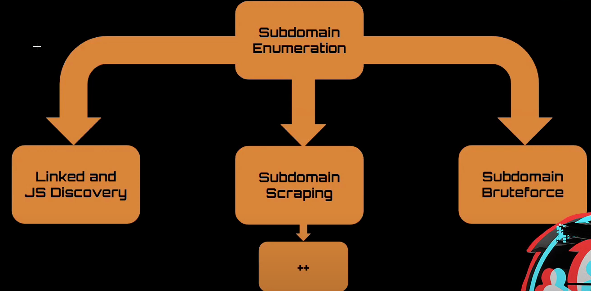

crunchbase - Company Information
bgp.he.net - Collection of known ip (tools: Metabigor/ ASNLOOKUP)
Whoxy.com - reverse WHOIS (comapny info / domains) / you can also use DOMLinktool
builtwith.com - Ad Analytics Relationship
Shodan - spiders infrastructure / response data, cert data, stack profiling data (registration)- --------------------Subdomain Enumeration--------------------

*GoSpider - spider / parsing javascript / crawler
hakrawler - spider / parsing javascript / crawler
SubDomainizer - subdomains refrenced in js files / find cloud services refrenced in js files / gets subdomains LOL
*Amass - take results from above and see domains / most sources for subdomain scraping- - amass enum -brute -d {url} -src
- - amass enum -brute -d {url} -rf resolvers.txt -w bruteforce.list
*Masscan - finding open ports on TCP- - masscan -p1-65535 -il $ipfile --max-rate 1800 -oG $outPutFile.log
- - masscan -p1-65535 {ip} --max-rate 1800
-
- --------------------Subdomain Scraping--------------------

shosubgo - subdomain scraper
Cloud Ranges - LOL this fucked but works well (massScan)
- --------------------Screenshotting--------------------
Eyewitness -
Aquatone -
httpscreenshot -
- --------------------SubDomain Takeover--------------------
Subover -
nuclei - kinda the best
- --------------------Recon Frameworks--------------------
https://github.com/SilverPoision/Rock-ON.git
https://github.com/epi052/recon-pipeline.git
*https://github.com/smicallef/spiderfoot.git
*https://github.com/j3ssie/Osmedeus.git
*https://github.com/yogeshojha/rengine.git